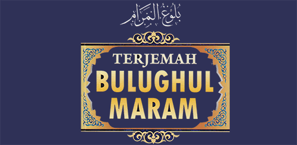

Pendahuluan
I. KITAB THOHAROH
Air
Bejana
Najis dan Cara Menghilangkan
Wudlu
Mengusap Dua Khuff
Perkara Yang Membatalkan Wudlu
Tata Cara Buang Hajat
Mandi dan Hukum Junub
Tayamum
Haidl
II. KITAB SHOLAT
Waktu Waktu Sholat
Adzan
Syarat Syarat Sholat
Sutrah Bagi Orang Yang Sholat
Anjuran Khusyu' Dalam Sholat
Masjid
Shifat Sholat
Sujud Sahwi dan Yang Lainnya
Sholat Thathawwu
Sholat Berjamaah dan Imam
Sholat Musafir dan Yang Sakit
Sholat Jumat
Sholat Khauf
Sholat Dua Hari Raya
Sholat Gerhana
Sholat Istisqa
Pakaian
III. KITAB JENAZAH
Jenazah
IV. KITAB ZAKAT
Zakat
Zakat Fitrah
Shodaqoh Thathawwu
Pembagian Shodaqoh
V. PUASA
Puasa
Puasa Sunnah dan Puasa Yang Dilarang
I'tikaf dan Ibadah Ramadhan
VI. KITAB HAJI
Keutamaan Haji dan Yang Berkewajiban Haji
Miqat
Wajib Ihram dan Sifatnya
Ihram dan Yang Berhubungan Dengannya
Sifat Haji dan Masuk Kota Mekkah
Terlambat dan Terhalangnya Haji
VII. KITAB JUAL BELI
Syarat Syarat dan Yang Dilarang Diperjual Belikan
Khiyar
Riba
Rukhsah Menjual Buah Buahan
Salam Qiradh dan Gadai
Taflis dan Hajr
Perdamaian
Memindahkan Hutang dan Menanggung
Syirkah dan Wakalah
Iqrar
Ariyah
Ghashab
Syufah
Qiradh
Musaqah dan Ijarah
Menghidupkan Tanah yang Mati
Waqaf
Hibah Umra dan Ruqba
Barang Temuan
Faraidl
Wasiat
Barang Titipan
VIII. KITAB NIKAH
Nikah
Pergaulan Dengan Isteri
Kafaah dan Khiyar
Maskawin
Walimah
Pembagian Giliran
Khulu
Thalaq
Rujuk
Ila Zihar dan Kafarat
Sumpah Lian
Iddah dan Ihdad
Penyusuan
Nafaqah
IX. KITAB URUSAN PIDANA
Pidana
Denda
Menuntut Darah dan Sumpah
Memerangi Para Pemberontak
Memerangi penjahat & Membunuh Orang Murtad
X. KITAB HUKUMAN
Hukuman Pelaku Zina
Hukuman Menuduh
Hukuman Pencurian
Hukuman Peminum & Minuman Memabukkan
Tazir dan Hukum Penjahat
XI. KITAB JIHAD
Jihad
Upeti dan Gencatan Senjata
Berlomba dan Memanah
XII. KITAB MAKANAN
Makanan
Binatang Buruan dan Sembelihan
Qurban
Aqiqah
XIII. KITAB SUMPAH DAN NAZAR
Sumpah dan Nazar
XIV. KITAB MEMUTUSKAN PERKARA
Memutuskan Perkara
Persaksian
Dakwa dan Bukti
XV. KITAB MEMERDEKAKAN BUDAK
Memerdekakan Budak
Mudabbar Mukatab dan Ummul Walad
XVI. KITAB KELENGKAPAN
Adab
Kebaikan dan Silaturrahmi
Zuhud dan Wara
Peringatan Menghindari Kejelekan Akhlak
Mendorong Untuk Melakukan Kebaikan
Dzikir dan Do'a